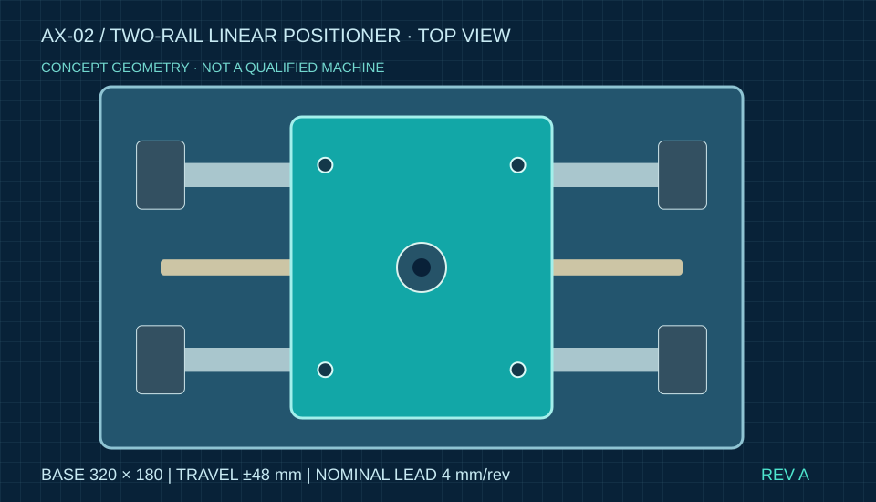
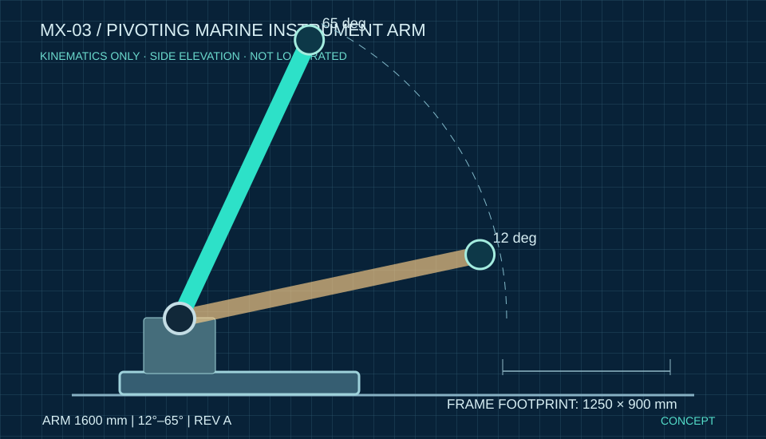

CAD study · Open source files
CAD study · Open source filesCAD / REPRODUCIBLE DEMONSTRATION
CX-01 adjustable instrument fixture
Two CNC-cut plates; parametric CAD source, dimensioned DXF profiles, BOM and engineering notes. Review the real files.
Explore project and downloads↗
Independent engineering design support for teams building real products. Parametric CAD, manufacturing drawings and structured technical deliverables—handled with clarity from the first brief.
Focused remote design services for manufacturers, product teams and independent engineering offices. Clear deliverables, defined requirements and no unnecessary layers.
Parametric parts, mechanical assemblies, concept refinement and engineering-ready exchange models.
Dimensioned drawings, production documentation and practical drawing packages for review and fabrication.
Assembly breakdowns, parts lists, naming conventions, revision tables and controlled handover files.
Small Python-based tools for repetitive technical tasks, data validation, tables and standardized reports.
Three original technical studies have downloadable CAD source, dimensions and design notes. No fabricated commissions, prototype tests or certifications are claimed.
CAD study · Open source filesTwo CNC-cut plates; parametric CAD source, dimensioned DXF profiles, BOM and engineering notes. Review the real files.

Original concept · 3D source + geometryParametric 3D assembly, 96 mm nominal motion study, BOM, drawing reference and reproducible geometry checks.

Marine kinematics · Concept, not certifiedEditable parametric pivot assembly, swept-envelope calculation, concept BOM and a transparent marine engineering risk register.
 RUNNABLE TOOL · CSV INPUTS · TESTED LOGIC
RUNNABLE TOOL · CSV INPUTS · TESTED LOGICWorking browser tool to compare two BOMs, detect added, removed and modified items, and export a change report. All processing stays local.
Request a small, defined CAD or documentation work package. We agree the inputs, file formats, review stages, price and schedule before any commitment.
Get to know the studioIntended use, geometry, assumptions and file inputs.
Agree outputs, revision rules and schedule.
Develop and review the agreed deliverables.
Organized files for your next engineering step.
Support for industrial product development, mechanical subcontractors, marine equipment and prototype-focused businesses. The scope is agreed against available tools and professional competencies.
Parts, assemblies and documentation supporting small-scale product development.
SCOPED ENGINEERING SUPPORT →CAD drawings, controlled revisions and documentation for workshop review.
SCOPED ENGINEERING SUPPORT →Mechanical components and preliminary documentation in marine engineering contexts.
SCOPED ENGINEERING SUPPORT →Technical data, BOM and repeatable reporting workflows.
SCOPED ENGINEERING SUPPORT →Discuss requirements with the person developing the work.
STEP, PDF, DXF and structured tables, where compatible.
We label concepts and demonstrations accurately.
Send a short brief. We'll first clarify the requirements, deliverables and practical constraints.